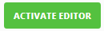
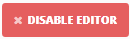
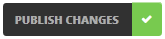
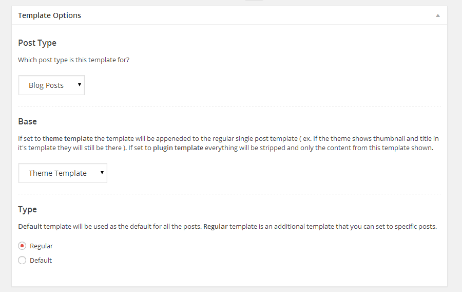
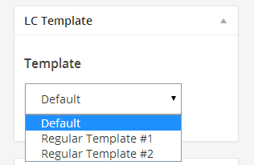
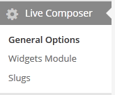

Created: January 8th, 2014
By: DanyDuchaine
First of all, thank you for purchasing Live Composer. If you have any questions that are not covered in this documentation, please feel free to visit the support forum.
In the zip you got from Themeforest you'll find a directory named Plugin, inside of that directory is a zipped file, that's the installable plugin zip. You can install it from the WordPress admin panel or by using FTP, it's up to you.
If you're installing though WordPress admin panel here's how:
If you're logged in as administrator and you visit a page on your website you will be seeing a green button ( "Activate Editor" ) in the bottom right corner. Clicking that button will reopen the page in Live Composer Mode.

When you're in the Live Composer Mode there will be a red button ( "Disable Editor" ) in the same place where the button for activation was. Clicking that button brings you back to the regular page view.

When you're done creating/editing a page you will need to publish the changes by clicking the "Publish Changes" button which is positioned in the bottom right corner as well.

We have made a set of interactive tutorials that explain how it all works much better than words and pictures could, you can start from a specific one but if it's your first time then it's best to start from the first one:
There's also plenty of videos that will help you understand how it works, go to our website and click the "Launch The Video" button in the top right, a playlist with all the videos will open.
After you go through the tutorials and watch a few of the videos just go and play around with it, it's the best way to get familiar with it.
The Post Templates feature allows you to create a template for each post type ( blog, projects, downloads, galleries ) which will then be used when showing the single page of that post type ( ex. a blog post, gallery, project ).
If a post type does not have a specific template created, the regular single post template from the theme ( single.php ) will be used to show the content for the posts of that post type.Go to the WordPress admin, in the main menu you will see Templates, click to Add New. Everything is the same as when adding a post/page except these 3 options ( check screenshot bellow )

They're all explained there so no need to do it here as well. When you publish the template click "View Template" button. From there everything's the same as when using the Live Composer to create a page.
The only difference between creating a page with LC and creating a template with LC is that when creating a template there are a few more modules available ( title, comments, thumbnail... )
All posts will use the default template ( the template that has "Type" set to "Default") for their post type, but you can also set some posts to use a different template ( a template that has "Type" set to "Regular" ).
If you go to edit a post ( blog or download or whichever ) you will see a "Template" option ( check screenshot bellow ). That is where you choose which template should that post use when being viewed.

Most of the options for modules are located right in the front-end ( Live Composer Mode ) but there are also some more general options that are located in the WordPress Admin.
To access them go to the WordPress Admin and at the bottom of the main navigation you'll see Live Composer, clicking that takes you to the options page.

There are just a few options in there since all the important module options are located in the front-end, but there will be more as the plugin evolves.
The most important option in there at the moment is the Max Width option. That is where you set how wide the modules section in a row is when set to wrapped. When this option has no value Live Composer will use the theme's $content_width variable to figure out how wide it should be.
.Those are the most important things you need to know about Live Composer. If you have any questions that weren't covered in the interactive tutorials and this usage documention feel free to ask us on the support forum.
Both the usage documentation and interactive tutorials will be updated as we get feedback from you, the users.
We hope Live Composer will greatly help you in website creation and extending themes that don't really have all the features that you want or don't really give you the flexibility that you need.
DanyDuchaine